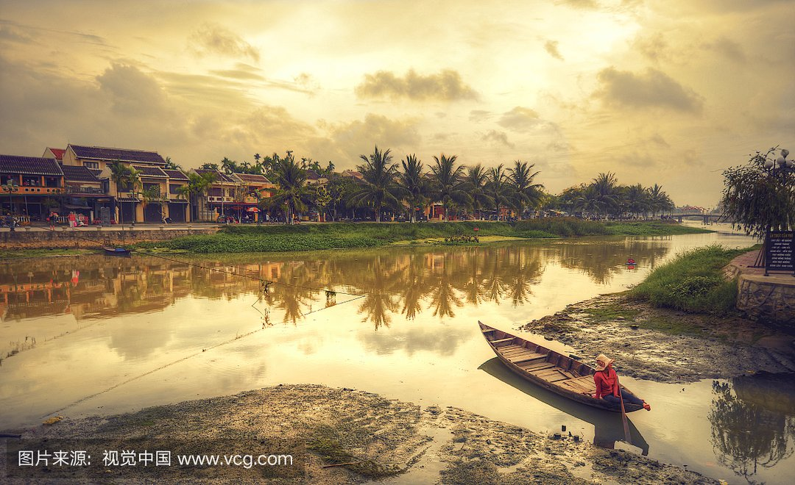
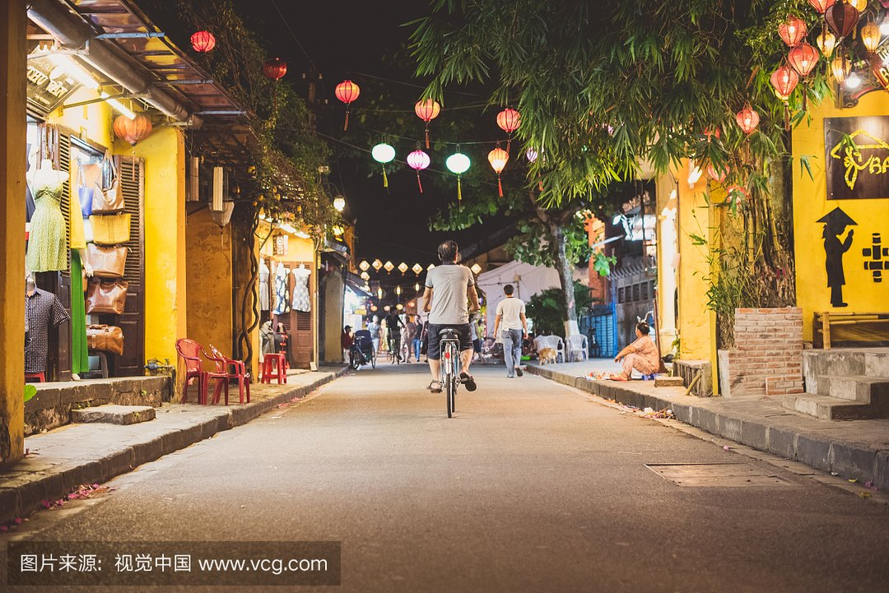
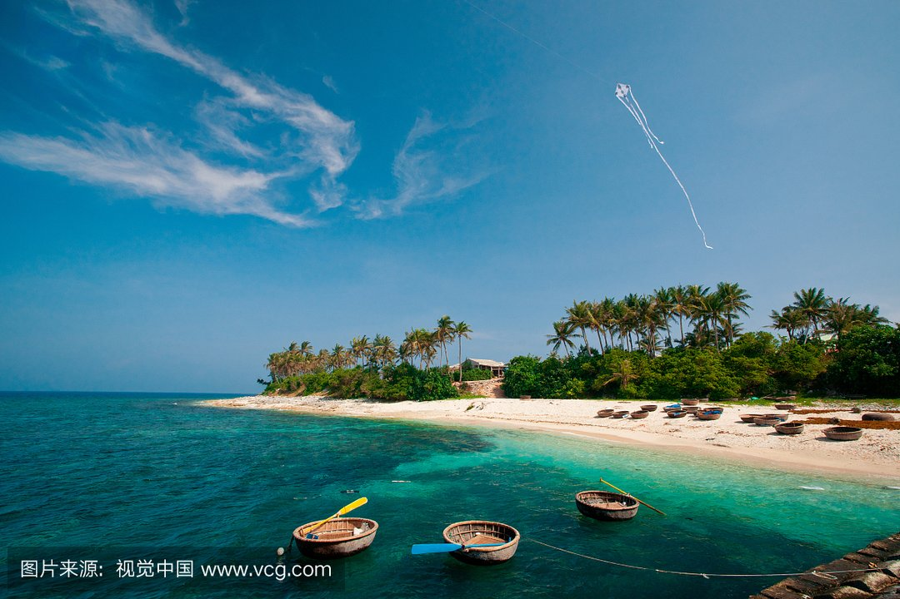
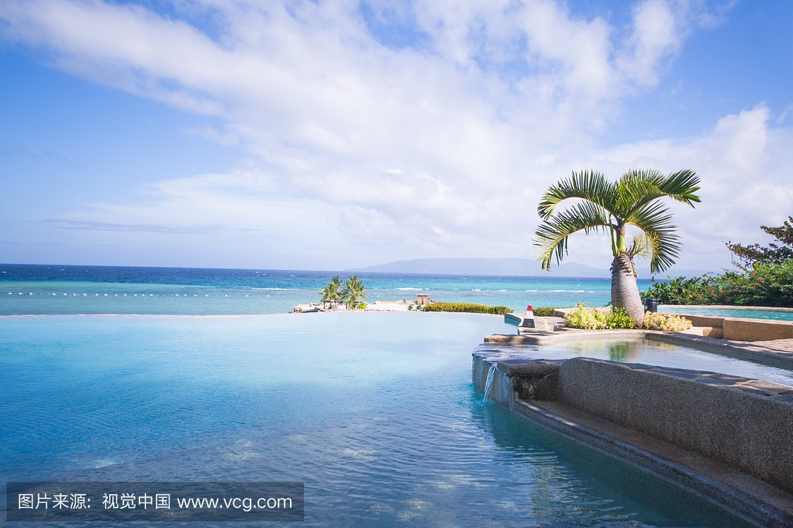

morly旅游网
一说越南，你肯定想到了海边，沙滩，想过去美丽的越南吗？
越南，全称为越南社会主义共和国(英语:Socialist Republic of Vietnam，越南语:Cộng hòa Xã hội Chủ nghĩa Việt Nam)，是亚洲的一个社会主义国家。
芽庄，越南南中部港市，庆和省省会。位于丐河口南岸，人口50万人(2012年)，古代建为城堡，附近福海地区为重要文化遗址，河口外有岛屿作屏障。空军基地。盛产鱼、虾和燕窝。
芽庄市位于越南中部沿海地区的庆和省，是越南众多滨海城市当中一个较为僻静的海边小城市，与海上七大奇观的下龙湾相比，芽庄的恬静内敛渐渐受到更多外国游客的关注。
芽庄海滨
位于南海之滨，有良好的海滨浴场。这里是游泳、水上运动和潜水的好地方。
冲洛景区
这是芽庄风景最好的地方。这里依山傍海、林木郁郁葱葱。还有隆山寺、保大皇别墅、海洋馆等景点。
龙山塔
(ChuaTinhHoiKhanhHoa;D23Thang10;门票免费;日出~日落)建筑上的龙形马赛克是由琉璃和陶瓷瓦片装饰而成的。这座塔寺始建于19世纪，至今寺中还住着和尚。在寺后的山上，有一尊全镇都看得见的大坐佛雕像。从这座佛像的位置，你也可以俯瞰整个芽庄。这座塔寺在火车站以西500米处。
保大别墅
(BietThuCauDa;门票2000d;餐厅顾客通常免费;8am~10pm)值得用一个下午去慢慢逛一逛，从这里的餐厅可以观赏到南海的风景。从芽庄顺着DTranPhu往南，然后左转，上山经过水泥储油罐，在到CauDa村之前就可以看到这里。别墅在海洋研究所以北几百米处。
内容整理至网络，如有侵权，请联系我们！1255394075@qq.com